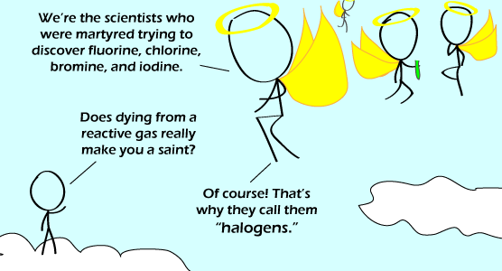

Comic JK 660
When I Feel Like It
⇤
<
?
>
⇥

⇤
<
?
>
⇥
Forum
.
RSS
.
Digg
.
Facebook
.
Reddit
.
Twitter
.
Stumbleupon
Enter your thoughts on number 660 somewhere people will give a shit. please, no spamming, trolling, or synthesising new halogens. Your mother died from inhaling helium, and it was a noble death. I fixed the line above. Don't thank me or send me money, it's OK, I do it for fun *Facepalm* Shut up. Still not fond of the new color scheme. I have to strain to see the text at the top and the text is just not bright enough or contrasting enough in color from the rest of the page to make it easily readable. Make it more like Maddox's color scheme if you insist on going light-on-dark. > WILL EVERYONE STOP WHINING ABOUT THE COLOR SCHEME >It's fine on my screen. > I don't have that problem at all >>No, he is right. The comic is too bright relative to the text. Text should be gray/white, or yellow like Maddox. Or maybe just bigger? Or make the comic less bright??? Or maybe you should quit your bitching and grow a pair. Seeing as how this is the internet I'm going to assume your male. So shut up, no one gives two shits what you think and the world will keep on running without your pathetic subjective feedback, you egotistical windbag. >and that, children, is how Vista was born... >> like. >>>No, just get rid of the comic altogether since it causes the problem. That way, we can read the 30 characters at the top of the page, like we all came here for anyway. So...much...rage...over...puns Flourine? does that have something to do with making bread? >...It's spelled right. And yes, you made me check. Troll. Love it I legitimately facepalmed after reading this one... but keep it up, most are quite amusing WOOOOOOOOOOOOOO! >Maybe its the Aussie accent, but the pun isn't immediately obvious, in the comic or the comment box. I see it, but it ain't funny or really even pun worthy. Sorry! >> How do _you_ pronounce "halogen"? >> Short "a" as in spam. >>> Or long "a" as in halo >>>or "halo" as in Lionel Richie >>>>As in a badly pronounced 'hello'gen. "Astatine was first produced by Dale R. Corson, Kenneth Ross MacKenzie, and Emilio Segrè in 1940. [...] It is the heaviest known halogen." (from the wikipedia page) >Yeah, but nobody died discovering it. >>at least, no-one they've admitted... AAAAAAAAAAAUUUUUUUUUUUUUUGGGGGGGGGGGGGHHHHHHHHHHHHHH I LITERALLY FACEPALMED Would #118 be a halogen/noble gas?